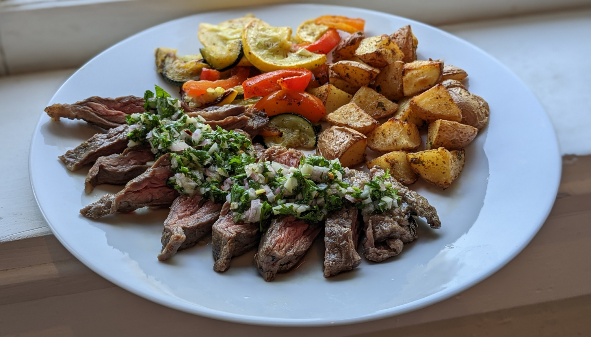

Churrasco con Chimichurri

Author: Chef Zee Cooks |
Cooked: September 24, 2022
Yields: 4 Servings | Prep Time: 15 Minutes | Cook Time: 15 Minutes
Ingredients
- 1/2 c. parsley
- 1/2 c. cilantro
- 4 garlic cloves
- 1 shallot
- 1 Tbs oregano
- 1/4 c. red wine vinegar
- 1 lemon (juice and zest)
- 1/2 c. olive oil
- 1 tsp red pepper flakes
- Salt and pepper to taste --------------------------
- 1 lb skirt steak
- Olive oil
- Salt and pepper to taste
- 1/4 tsp oregano
- 1/8 tsp cumin
Chimichurri
Churrasco
Directions
- Finely chop the parsley, cilantro, garlic, shallot, and oregano.
- Add herbs into bowl with vinegar. Zest half to whole lemon into bowl and then the juice of the whole lemon.
- Add in oil, red pepper flakes, and salt and pepper to taste. --------------------------
Chimichurri
- Allow the skirt steak to get up to room temperature.
- Drizzle each side of steak with olive oil and add spices. Gently score the length steak with a knife every ~1/2" (just barely nicking the surface). This will tenderize the steak further. Repeat on opposite side. Allow steak to sit to marinate for 30 minutes to an hour.
- Using a cast iron grill pan, add the steak and gently press the steak down into the grooves. Cook for 2 minutes on each side.
- Remove the steak and allow to rest of at least 5 minutes before cutting.
- Slice steak into strips and add chimichurri on top.
Churrasco
Additional Notes
- Instead of chopping the herbs by hand, add the parsley, cilantro, garlic, shallot, and oregano into a food processor with the vinegar and pulse until finely chopped.